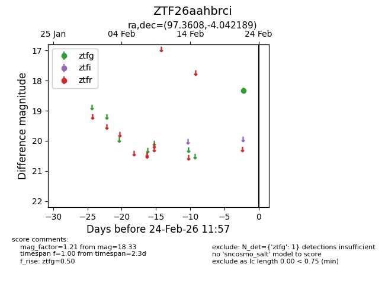
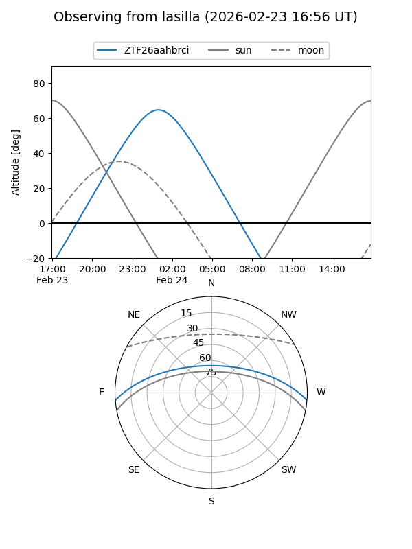
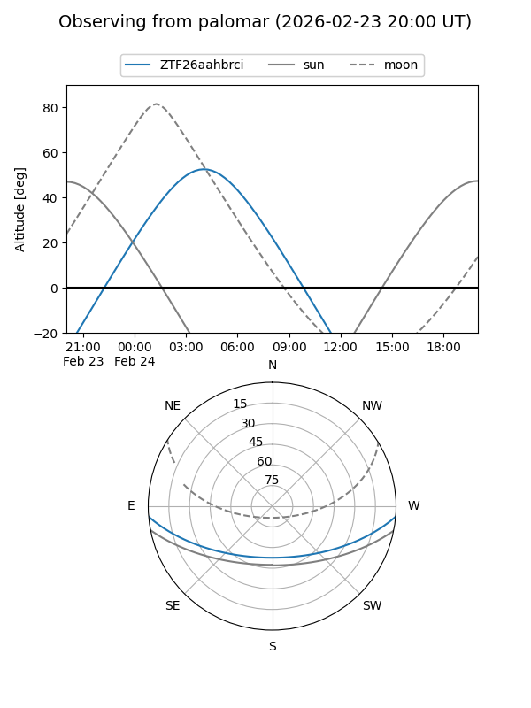

ZTF26aahbrci
Target ZTF26aahbrci at 2026-02-24 11:58
Aliases and brokers:
FINK: link
Lasair: link
ALeRCE: link
alt names
ZTF26aahbrci (ztf,fink_ztf)
Coordinates:
equatorial (ra, dec) = 97.3608,-4.04219
equatorial (HMS+DMS) = 06:29:26.58,-04:02:31.88
galactic (l, b) = (214.0369,-6.73124)
Flags:
Photometry:
last ztfg=18.33
1 ztfg detections
Lightcurve

Visibility


Additional plots